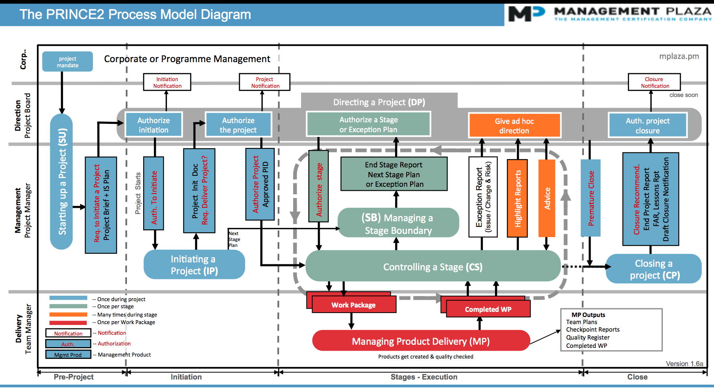
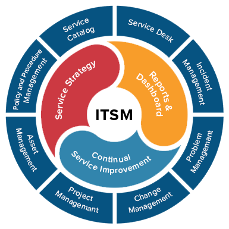
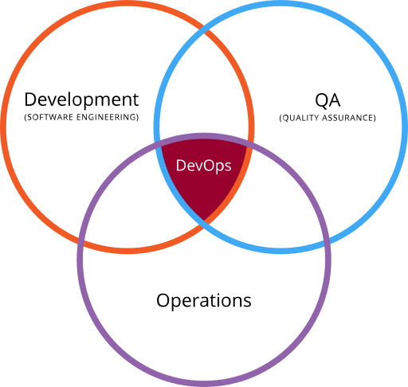
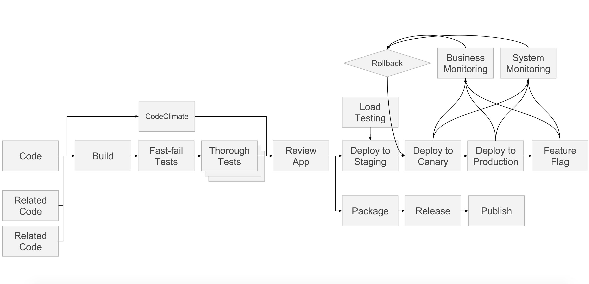
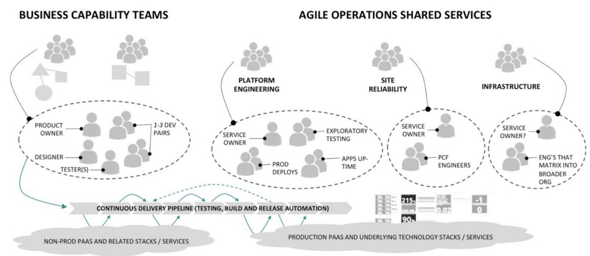

Agenda
- Traditional IT
- WTF is DevOps
- The New Way
- What it is NOT!!
- Responsibilities, accountability, HELP
Service & project management the traditional way
- ITIL
- Prince2
- ITSM
Prince2
ITSM

There's a new sheriff in town
- Agile
- DevOps
- DevSecOps
Let's not forget the lessons from the past...

Definitions & terminology
DevOps is the practice of operations and development engineers participating together in the entire service lifecycle, from design through the development process to production support.DevOps is also characterized by:
- operations staff making use many of the same tools and techniques as developers for their systems work.
- development staff making use many of the same tools and techniques as operations for their development work.

Who?
- Ops - "Ops" is a blanket term for systems engineers, system administrators, operations staff, release engineers, DBAs, network engineers, security professionals, and various other subdisciplines and job titles.
- Dev - "Development", in practice it is even wider and means "all the people involved in developing the product," which can include Product, QA, and other kinds of disciplines.
Who?

Top dudes (multigender)
Who?
What?
The main characteristic of the DevOps movement is to strongly advocate automation and monitoring at all steps of software construction, from integration, testing, releasing to deployment and infrastructure management. DevOps aims at shorter development cycles, increased deployment frequency, and more dependable releases, in close alignment with business objectives. - wikipedia
- monitoring throughout the delivery process
- automation throughout the delivery process
- decrease time to market & MTBR & increase MTBF
How? (episode one - "Tools")
- strong foundation (kubernetes and containerization)
- gitlab
- CI/CD
- jira
- selenium
- kibana, grafana, sentry
- TODO jaeger/opentracing
How? (technical process)
How? (episode two - "Process")
- .....
- "Shift to the left"
- Reduce silos and handoffs
- We could start with designated time for devops in sprints
- Measure, learn, adapt
How? (discussion)
How do we deal with...
- suppliers
- feedback loops of customers
- grand application design & longevity

What DevOps is not

- just tooling
- just process
- a job title
- .. "we're hip and modern!"

This all sounds scary or boring
I'm trying to run a business here!
- Who is responsible?
- Who is accountable?
- Who is consulted?
- Who is informed?
Really?!

Lets give mapping these things a try...
Responsible
Responsible
Lets talk about customer support
- On call sucks
- Helpdesks tend to suck and/or are massively expensive to operate
- Breeds bureaucracy culture
Accountable
The enemy of accountability is ambiguity
- 3rd party dependencies
- SaaS, PaaS, IaaS, PaasHaas
Consulted
- Business/domain expert consulted during app design
- Are we missing anyone?
Informed
- Who?
- When?